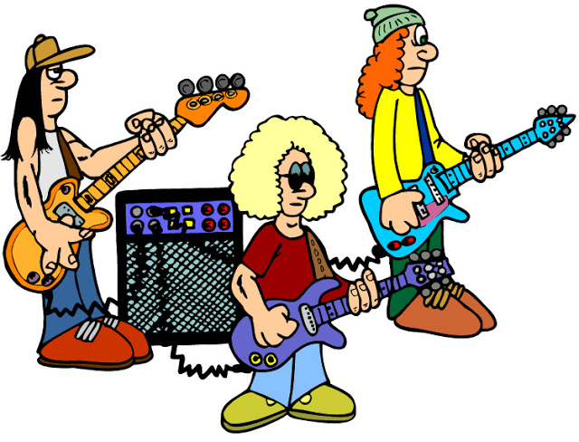

Software engineering, a discipline rooted in logic and problem-solving, and music, an art form fueled by emotion and expression, may appear to occupy opposite ends of the spectrum. However, the convergence of these two realms has given rise to a vibrant domain where innovation, creativity, and technology meet. Thus, there is something to be said about the relationship between software engineering and musicians.
In today’s age, it is apparent that software engineering has revolutionized the music industry. Before the internet of things, music artists didn’t have the same levels of accessibility and exposure as they do now. They would have to go through record labels to conjure up any noticeable amount of attention and the idea of being independent was just silly. It is thanks to advancements in cloud computing and web development that we have music streaming platforms like YouTube, SoundCloud and Spotify which make the process of listening to music more streamlined than ever. In the beginning of this digital transformation, you would need to have physical copies of whatever medium to listen to your music. We went from records to cassettes and walkmans to CDs and finally downloadable music on mp3 players. However, it is thanks to streaming platforms that I know a lot of my favorite artists and I’m thankful for that.
Another way that software engineering has revolutionized the music industry is through the tools which musicians use. One program that I like to use a lot is FL Studio. It’s a Digital audio workstation where you can compose, record, mix and master music. If I ever wanted to explore a song idea 20-30 years ago, I would have to go through a professional music studio with physical soundboard equipment to do what I wanted to do. However, a lot of these processes in music production are now virtualized, making it even more accessible than ever. Digital audio workstations (DAWs), virtual instruments, and music production software have become essential tools for modern musicians and composers. These software applications are the result of the collaborative efforts of software engineers and musicians, working hand in hand to create innovative platforms that enable musicians to bring their artistic visions to life.
I believe both software engineers and musicians require creativity to excel in their respective domains. In software engineering, crafting elegant solutions to complex problems often demands creative thinking and innovation. Similarly, musicians must harness their creative prowess to compose captivating melodies, orchestrate instruments, and evoke emotions through their music. I love to be creative, and I love to test the things that I make which is why I chose software engineering as a potential career. In the future, I hope to eventually work on tools to help musicians make the music they want to create.